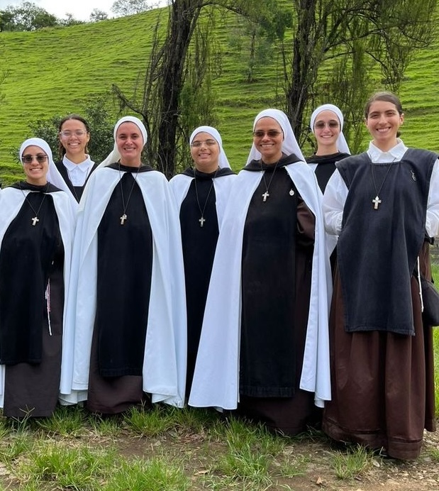
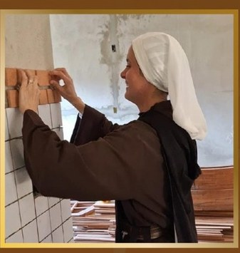
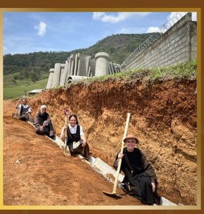
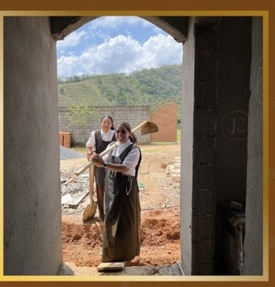

Nossa caminhada
Três marcos que explicam por que este mosteiro existe.
-
30 de novembro de 1997 · Fortaleza (CE)
Origem do carisma
O Instituto Hesed foi fundado por Irmã Kelly Patrícia e Irmã Jane Madeleine, somos um instituto religioso de espiritualidade carmelita e Nossa Mãe Santíssima do Carmo é nossa Rainha, Modelo e Mestra da vida interior, alma enamorada que nos conduz à intimidade com Deus e à vida de oração.
-
2006 · Itajubá (MG)
Chegada a Itajubá
A fundação do instituto na cidade ocorreu em 2006, instalando-se inicialmente dentro das dependências da Comunidade Sol de Deus, onde a vida de oração e serviço começou a criar raízes na região.
-
2018 · Santa Rosa, Itajubá
Construção do mosteiro
Em 2018 as irmãs iniciaram a construção da sede própria do mosteiro. A estrutura principal foi erguida com doações e campanhas de fiéis, avançando por etapas. A Campanha da Pintura é o passo atual dessa caminhada.




“Hesed” é a palavra hebraica para o amor fiel e misericordioso de Deus — o mesmo amor que sustenta esta obra desde 1997.